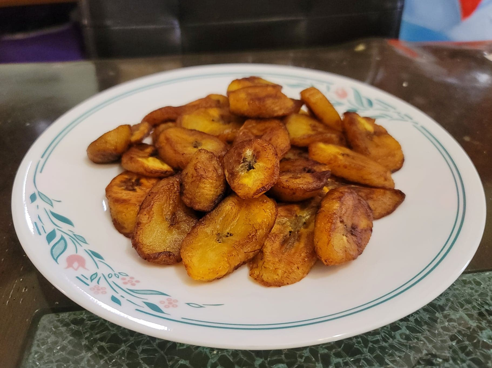

Fried Plantains

Ingredients:
- Very ripe plantains, almost black, sliced diagonally into 1/2 inch slices
- Oil for frying
Instructions:
- Heat enough oil to reach halfway up a slice of plantain over medium heat.
- Add in the plantains. Fry until golden, and then flip and repeat on the other side. Serve immediately.